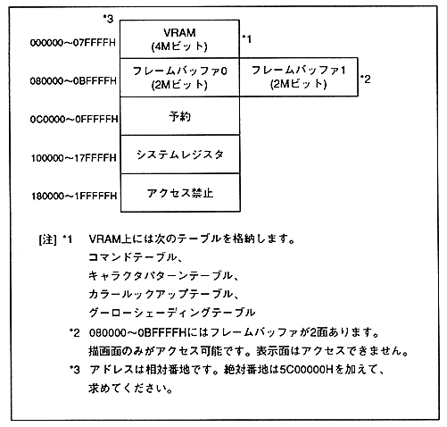

Return to previous page ｜ Return to menu ｜ Go to next page
Chapter 2 Address Map
-
2.1 Address map
- The address map of VRAM, frame buffer, and system register managed by VDP1 is as follows.
Figure 2.1 Address map

Return to previous page ｜ Return to menu ｜ Go to next page